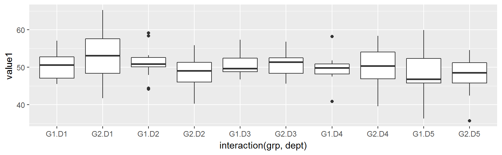
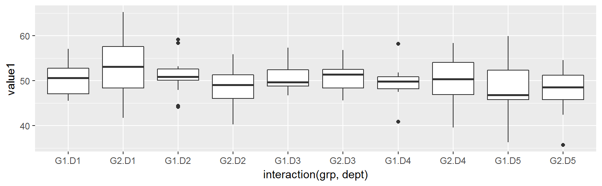

Chapter 6 Graphic Visualization
This chapter compares various method to plotting using base-R and ggplot.
6.1 Library used
- Loading necessary library as below:
- Base R library already included functions: ** hist, plot, barplot, boxplot**
library(ggplot2) ## ggplot, qplot6.2 Sample Data
This chapter uses the sample data generate with below code. The idea is to simulate two categorical-alike feature, and two numeric value feature:
- dept is random character between ‘D1’, ‘D2’, ‘D3’, ‘D4’ and ‘D5’
- grp is random character with randomly generated ‘G1’, ‘G2’
- value1 represents numeric value, normally distributed at mean 50
- value2 is numeric value, normally distributed at mean 25
set.seed(1234)
my.df = data.frame(
dept = paste('D',sample(1:5, 100, replace = T),sep=''),
grp = paste('G',sample(1:2, 100, replace = T),sep=''),
value1 = rnorm(1:100, mean = 50, sd = 5),
value2 = rnorm(1:100, mean = 20, sd = 3),
stringsAsFactors = F
)
head(my.df)## dept grp value1 value2
## 1 D1 G1 52.07262 21.45568
## 2 D4 G2 47.62641 22.09031
## 3 D4 G1 50.32997 20.55654
## 4 D4 G1 47.48761 22.10220
## 5 D5 G1 45.87001 20.93504
## 6 D4 G1 50.83495 22.281396.3 Histogram
6.3.1 Single Dimension Data
- Require x as numerical data
- In hist, binwidth setting is not available, only breaks (number of bins) can be specified
- Default hist/ggplot/qplot number of bins is 30
- In qplot, single x numerical variable default to histogram
- You can’t specify both bins/breaks and bindwidth together, as it implies each other
par(mfrow=c(1,2))
hist (my.df$value1) # default breaks = 30
hist (my.df$value1, breaks=3)
qplot (data = my.df, x=value1)
qplot (data = my.df, x=value1, geom='histogram')
qplot (data = my.df, x=value1, bins=15)
ggplot(data = my.df, aes(x=value1)) + geom_histogram() # default bins = 30
ggplot(data = my.df, aes(x=value1)) + geom_histogram(bins = 15)
ggplot(data = my.df, aes(x=value1)) + geom_histogram(binwidth = 10)


6.3.2 Two Dimension Data
- x = numerical data
- fill = categorica-alike data
qplot (data = my.df, x=value1, fill=grp, geom='histogram')
ggplot(data = my.df, aes(x=value1, fill=grp)) + geom_histogram()

6.4 Scatter Plot
6.4.1 Two Dimension Data
- Use scatter plot to represent correlation between two numeric variables
- x = number, y = number
- qplot default to geom_point when two numerical value is supplied for x and y
plot (my.df$value1, my.df$value2)
qplot (data = my.df, x = value1, y = value2)
qplot (data = my.df, x = value1, y = value2, geom='point')
ggplot(data = my.df, aes(x=value1, y=value2)) + geom_point()


6.4.2 Two + One Dimension Data
- Base-R does not support extra dimension visualization
- In qplot/ggplot, the third dimension of data can be represented by assigning color parameter to the third variable
- Note that fill has not effect on scatter plot. fill should only be used for bar like chart eg. geom_hist or gem_bar
plot (my.df$value1, my.df$value2)
qplot (data = my.df, x = value1, y = value2, color = grp, geom='point')
ggplot(data = my.df, aes(x=value1, y=value2, color = grp)) + geom_point()
ggplot(data = my.df, aes(x=value1, y=value2, fill = grp)) + geom_point()


6.5 Bar Chart
6.5.1 Single Dimension Data
- Use bar to repfresent frequency chart
- plot requre a factor to plot frequency chart
- barplot require conversion of vector into table for plotting
- qplot default to geom_bar when single categorical-alike feature is used
par(mfrow=c(1,2))
plot(as.factor(my.df$dept))
barplot(table(my.df$dept))
qplot (data = my.df, x=dept)
qplot (data = my.df, x=dept, geom='bar')
ggplot(data = my.df, aes(x=dept)) + geom_bar()


6.5.2 Two + One Dimension Data
- Use fill to introduce extra variable visualizion in filling the bar
- Use color to have the extra variable represented with border color
qplot (data = my.df, dept, fill = grp)
qplot (data = my.df, x = dept, fill = grp, geom='bar')
ggplot(data = my.df, aes(x = dept, fill = grp)) + geom_bar()
ggplot(data = my.df, aes(x = dept, color= grp)) + geom_bar()


6.5.3 Reordering
qplot (data = my.df, x=dept)
qplot (data = my.df, x=dept, geom='bar')
ggplot(data = my.df, aes(x=dept)) + geom_bar()


6.5.4 Positioning
- qplot does not support positioning
- For ggplot/qplot, default position is stack
- position = ‘dodge’ similar to position = position_dodge(), however the later is more flexible with ability to adjust overlapping level between sub-bar (default is 0.9)
g = ggplot(data = my.df, aes(x=dept, fill=grp))
g + geom_bar(position='stack') # default position
g + geom_bar(position='dodge')
g + geom_bar(position=position_dodge()) # default 0.9
g + geom_bar(position=position_dodge(0.5))
g + geom_bar(position=position_dodge(1.0))


6.5.5 In-Bar Text Labeling
6.6 Box Plot
6.6.1 One Dimension Data
- In boxplot(), only single variable need to be supplied
- In ggplot/qplot, variable x and y is required. Variable y is the actual value, variable x is the group variable. Case of one dimension, use x=’’ when no grouping is desired
boxplot(my.df$value1)
qplot (data = my.df, x = '' , y = value1, geom='boxplot')
ggplot (data = my.df, aes( x= '', y=value1 )) + geom_boxplot()


6.6.2 Two Dimension Data
- In boxplot, use ~ to specify y~x, where x is grouping variable
boxplot(data = my.df, value1~grp)
qplot (data = my.df, x = grp , y = value1, geom='boxplot')
ggplot (data = my.df, aes(x=grp, y=value1)) + geom_boxplot()


6.6.3 Two + One Dimension Data
- Extra dimension can be included in for x-axis
- In boxplot, use + to specify extra dimension
- In qplot/ggplot, use interaction to specify extra dimension
boxplot(data = my.df, value1~grp+dept)
qplot (data = my.df, x=interaction(grp,dept) , y=value1, geom='boxplot')
ggplot (data = my.df, aes(x=interaction(grp,dept) , y=value1)) + geom_boxplot() 
